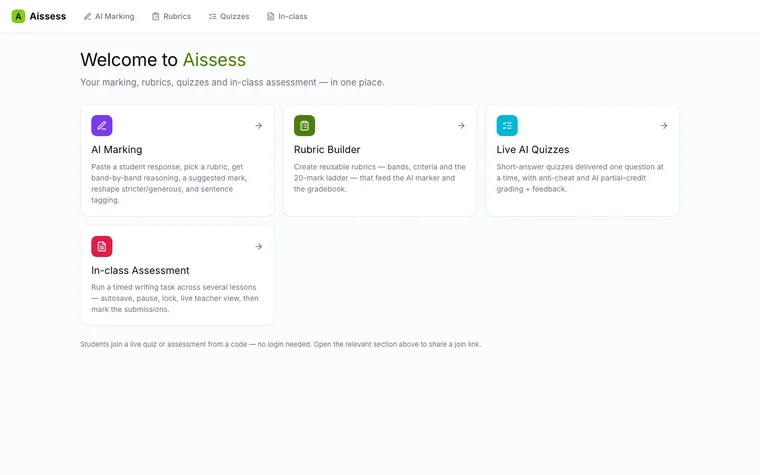
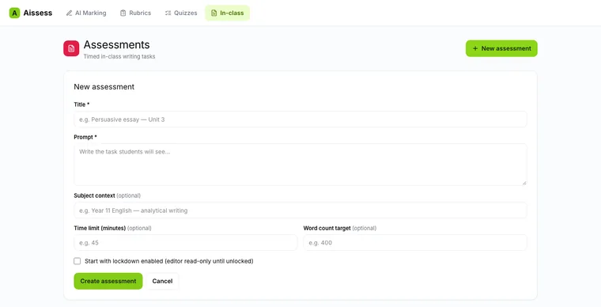
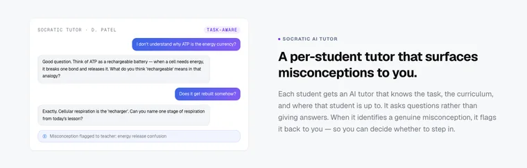
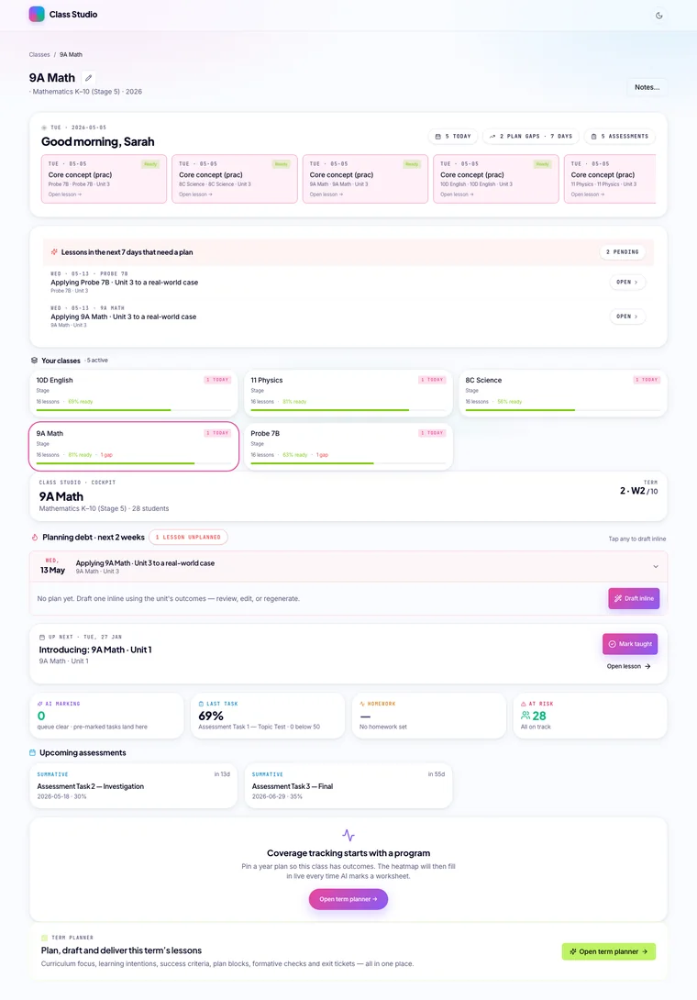
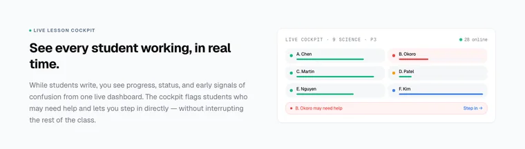

Class Studio and Aissess
Purpose-built assessment software: the teacher controls access, students' work carries across lessons, and AI marks reach students only after the teacher approves them.
No sign-in. Made-up data and sample AI responses. Opens in a new tab.
Designed and built independently, outside my school roles. Demonstrations use made-up data and sample AI responses.


The classroom problem
Most software used for classwork is general-purpose. Students can open a task anywhere, at any time; a long task gets lost between lessons; and AI feedback is either unavailable or unchecked. Class Studio, and Aissess after it, are my proof of concept for software designed on purpose for teaching and assessment.
What it does
- Students reach a class task only when the teacher opens it. The teacher can pause the whole class ("eyes up"), lock work or make it read-only.
- Longer assessments and research tasks run across several lessons. Work saves automatically and students pick up where they left off.
- A tutor that asks guiding questions instead of giving answers, and tells the teacher when a student seems to hold a misconception.
- AI drafts marks and feedback against the teacher's own marking criteria, then the teacher reviews, changes and releases them.
Where AI fits
AI suggests; the teacher decides. In the marking workbench the AI explains its reasoning band by band and suggests a mark, and nothing reaches a student until the teacher confirms and releases it. Aissess is a later, more focused rebuild of the assessment features. In the demonstration versions the AI responses are pre-written samples, so they run without any live AI service.
A closer look
Select a screenshot to see it in a larger view.







